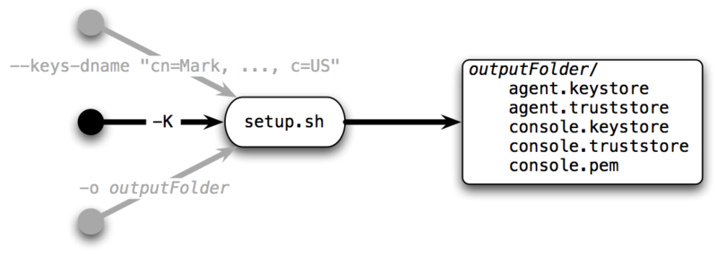
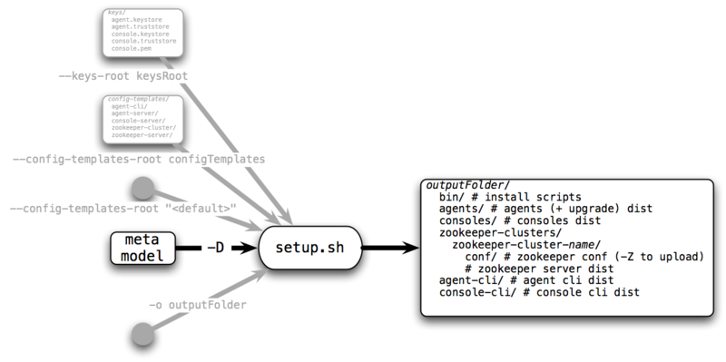
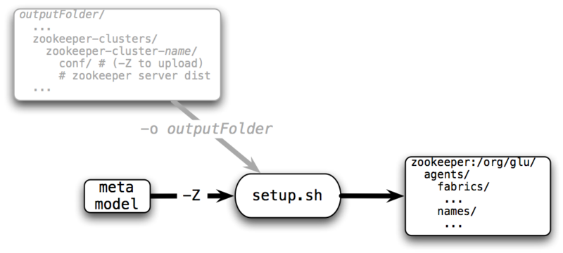

setup.sh tool¶
The setup tool is used during the production setup. It comes bundled with glu under $GLU_HOME/bin (assuming that $GLU_HOME is the root of the glu distribution. In order to get more help, simply issue:
$GLU_HOME/bin/setup.sh -h
Tip
By default, the setup tool uses the current directory for its output. It is then recommended to cd into the target directory and issue $GLU_HOME/bin/setup.sh commands. Note that you can also use the -o xxxx to specify the target directory, or enter it when prompted.
Tip
When you run with the -h option, the output will show where the defaults are located on your drive.
The tool has essentially 3 modes which are used during the setup process.
1. Generating keys [-K]¶
This command is used to generate the keys for glu (securing the communication to the agents).
Example usage:
setup.sh -K -o /tmp/keys --keys-dname "CN=Yan P., OU=IT, O=Acme, L=Mountain View, S=CA, C=US"
- -K (or --gen-keys): to generate the keys
- -o: the directory in which to generate the set of keys
- --keys-dname: to provide your own X.500 distinguished name for the certificates.
2. Generating the distributions [-D]¶
This command is used to generate the distributions, which are ready to install/run packaged tailored to your environment.
Example usage:
setup.sh -D -o /tmp/distributions/staging --config-templates-root "<default>" \
--config-templates-root /tmp/glu-meta-model/config-templates /tmp/glu-meta-model/my-meta-model.json.groovy
- -D (or --gen-dist): to generate the distributions
- -o: the directory in which to generate the distributions
- --config-templates-root "<default>": use the config templates that comes with glu
- --config-templates-root xxx: use your own (cumulative)
- --agents-only: generate the distributions only for agents
- --consoles-only: generate the distributions only for consoles
- --zookeeper-clusters-only: generate the distributions only for ZooKeeper clusters
- --keys-root: only used if you define relative uris for the keys in the meta model (rarely used)
- --packages-root: only used if you do not want to use the packages that come with glu (rarely used)
Note
--config-templates-root is cumulative, meaning you can define as many as you want and they will all be processed. The order is important. It is strongly recommended to always use --config-templates-root "<default>" first, then your own.
3. Configure ZooKeeper clusters [-Z]¶
This command is used to upload the configuration (that was generated during the -D phase) to the ZooKeeper clusters. This means that you should run -D prior to using this command.
Note
In order for this command to succeed, the ZooKeeper clusters must be up and running.
Example usage:
setup.sh -Z -o /tmp/distributions/staging /tmp/glu-meta-model/my-meta-model.json.groovy
- -Z (or --configure-zookeeper-clusters): to configure the ZooKeeper clusters
- -o: the directory in which the distributions were generated (provided during -D)
- --zookeeper-cluster-name: only configure the cluster with the provided name (cumulative)
Note
For simplicity and consistency, the -o option is being reused although in this case it is not an output folder, but an input one: Nothing will be written in this folder during this step.
Note
zookeeper-cluster-name is cumulative so you can provide more than one.
4. Showing the json model [-J]¶
This command is used to render the meta model in json format.
Tip
The meta model comes with a lot of default values (example: the agent port is 12906), which means that if you do not define it in the meta model, the default value will be used. This representation fully expand and show all default values.
Example usage:
setup.sh -J /tmp/glu-meta-model/my-meta-model.json.groovy
Warning
2014/04/19: A critical bug while upgrading has been found. It is strongly advised not to upgrade at this time.